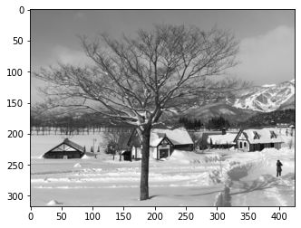
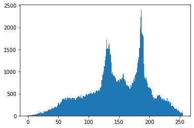

Histogram Equalization
Contents
Histogram Equalization¶
import matplotlib.pyplot as plt
import cv2
import numpy as np
histogram¶
先來讀一張圖：
src = plt.imread("imgs/snow.jpg")
print(src.shape)
plt.imshow(src);
(317, 426, 3)
灰階圖片的 histogram¶
我們可以把影像轉成灰階後，拉直，然後畫 histogram
snow_gray = cv2.cvtColor(src, cv2.COLOR_RGB2GRAY)
plt.imshow(snow_gray, cmap = "gray");

plt.hist(snow_gray.ravel(), 256);

opencv 有
calcHist()函數，可以幫我們統計出每個像素出現的次數
snow_hist = cv2.calcHist(
images = [snow_gray], # 可以放好幾個影像
channels = [0], # 0 是 gray
mask = None, # 有放 mask，就只會對那個區域算 histogram
histSize = [256], # 就是要幾個 bins
ranges = [0, 256], # value 是從幾到幾
accumulate = False # 如果放多個影像，這邊可以選 True，就會累積上去
)
snow_hist.shape
(256, 1)
這個 256 的 array，就是每個 bin 對應的 frequency。
例如我們看前五個
snow_hist[:6]
array([[ 4.],
[ 5.],
[ 3.],
[ 7.],
[11.],
[10.]], dtype=float32)
這就是像素 0 ~ 5，分別出現的次數
我們可以用 plt.plot 來畫圖